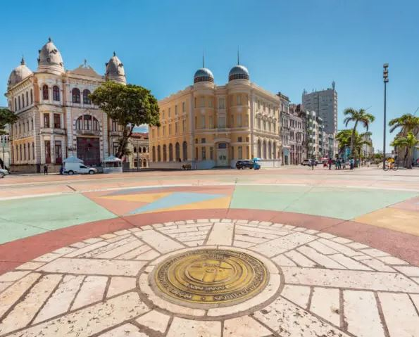
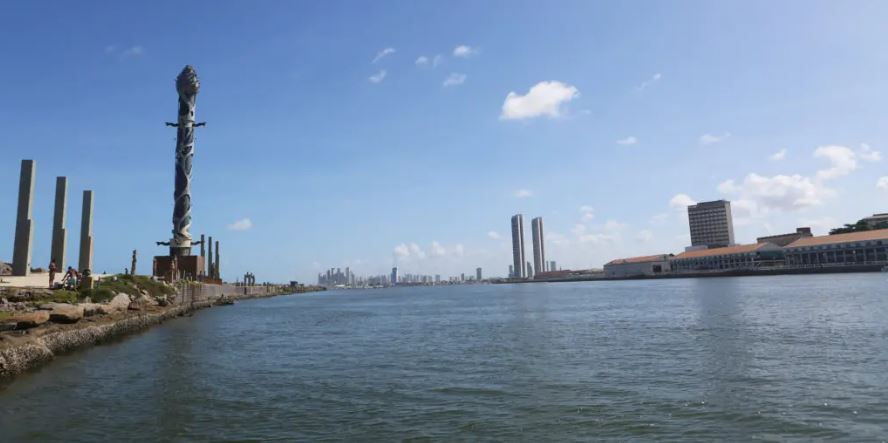
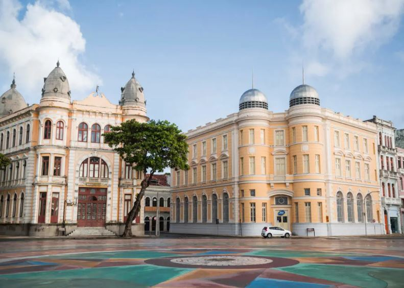
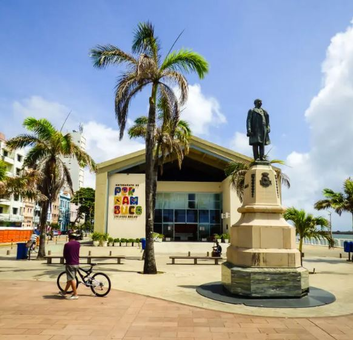
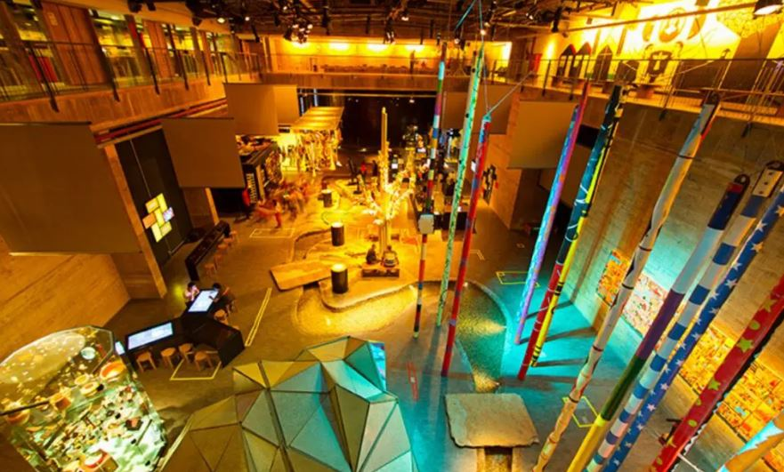

Rosa dos Ventos de Cícero Dias
Em 1999, a Praça do Marco Zero passou por uma transformação drástica. A estátua do Barão do Rio Branco e o Marco Zero foram mudados de lugar, um pouco mais para o canto da praça. Com isso, além de ser o centro geográfico de Pernambuco, o Marco Zero passou a ser o centro de uma obra de arte do célebre pintor pernambucano Cícero Dias, um dos mais importantes nomes do modernismo brasileiro: a Rosa dos Ventos. Com 20 metros de diâmetro e formada por pedras de quartzo e granito com pigmentação colorida, a Rosa dos Ventos de Cícero Dias se tornou mais uma das grandes atrações da Praça do Marco Zero.
Parque das Esculturas Francisco Brennand
De frente para a Praça do Marco Zero, sobre um dique natural que protege um estuário do Rio Capibaribe, foi construído em 2000 o Parque das Esculturas Francisco Brennand, que se tornou uma das maiores atrações turísticas da cidade. O parque reúne dezenas de obras do artista plástico Francisco Brennand. A mais imponente delas é a Torre de Cristal, de 32 metros de altura, inspirada em uma flor descoberta pelo paisagista Roberto Burle Marx. Para chegar ao Parque das Esculturas, é preciso fazer uma travessia de barco pelo Rio Capibaribe, com partida e retorno pela Praça do Marco Zero. Endereço: Arrecifes do Porto, S/N, Bairro do Recife (Próximo ao Marco Zero) Funcionamento: Diariamente, das 7h às 17h Entrada: Gratuita (Mas é preciso pagar a travessia de barco, que custa R$ 10. O valor cobre a ida e a volta).

De frente para a Praça do Marco Zero, sobre um dique natural que protege um estuário do Rio Capibaribe, foi construído em 2000 o Parque das Esculturas Francisco Brennand, que se tornou uma das maiores atrações turísticas da cidade. O parque reúne dezenas de obras do artista plástico Francisco Brennand. A mais imponente delas é a Torre de Cristal, de 32 metros de altura, inspirada em uma flor descoberta pelo paisagista Roberto Burle Marx. Para chegar ao Parque das Esculturas, é preciso fazer uma travessia de barco pelo Rio Capibaribe, com partida e retorno pela Praça do Marco Zero. Endereço: Arrecifes do Porto, S/N, Bairro do Recife (Próximo ao Marco Zero) Funcionamento: Diariamente, das 7h às 17h Entrada: Gratuita (Mas é preciso pagar a travessia de barco, que custa R$ 10. O valor cobre a ida e a volta).Caixa Cultural Recife
Em um prédio de estilo neoclássico datado de 1912 e projetado para ser a sede do Bank of London & South America Limited, funciona hoje a Caixa Cultural Recife. Em 1977, o prédio foi adquirido e se tornou sede da Bolsa de Valores de Pernambuco e da Paraíba até 2006, quando foi comprado pela Caixa Econômica Federal. E justamente no ano do centenário do prédio, em 2021, foi inaugurada a Caixa Cultural Recife, que conta com galerias de arte, sala multimídia, duas salas para oficinas de arte-educação e um teatro com 96 lugares. Endereço: Av. Alfredo Lisboa, 505 – Bairro do Recife Telefones: (81) 3425-1915 (Informações e Bilheteria) Funcionamento: Terça a domingo, das 10h às 18h.

Centro de Artesanato de Pernambuco
Inaugurado em 2012, o Centro de Artesanato de Pernambuco rapidamente se tornou uma das referências da Praça do Marco Zero, tanto para turistas quanto para os moradores de Recife. Localizado em um amplo galpão de 2,5 mil m², o espaço conta corredores amplos, vista privilegiada para o mar e mais de 25 mil peças à venda, feitas à mão por cerca de 1,8 mil artesãos de todos os cantos de Pernambuco. O centro conta com divisões como sala de estar, quarto, sala de jantar e outros cômodos de uma casa, para que os visitantes possam visualizar como as peças artesanais poderiam ficar em seus lares. E as peças são feitas de matérias-primas das mais diversas, como renda, madeira, metal, cerâmica e vidro, entre outros. Endereço: Av. Alfredo Lisboa, s/n – Bairro do Recife Telefone: (81) 3183-3450 Funcionamento: Segunda a sábado, das 9h às 19h. Domingos, das 10h às 16h

Museu Cais do Sertão
Localizado em uma região de antigos armazéns do Porto do Recife, mais precisamente no Armazém 10, muito próximo da Praça do Marco Zero, o Museu Cais do Sertão conta com exposições temporárias e permanentes, que sempre trazem com referências à cultura do Sertão Nordestino, em especial ao grande homenageado do espaço: o músico Luiz Gonzaga. Com uma arquitetura inovadora, o espaço busca oferecer aos seus visitantes uma experiência interativa e sensorial, numa imersão à cultura sertaneja do Nordeste em pleno litoral. E também oferece diversos tipos de cursos, aulas e palestras. Endereço: Armazém 10, Av. Alfredo Lisboa, s/n – Bairro do Recife Telefone: (81) 3182-8268 Funcionamento: Quinta e sexta, das 10h às 16h. Sábados, domingos e feriados, das 11h às 17h
